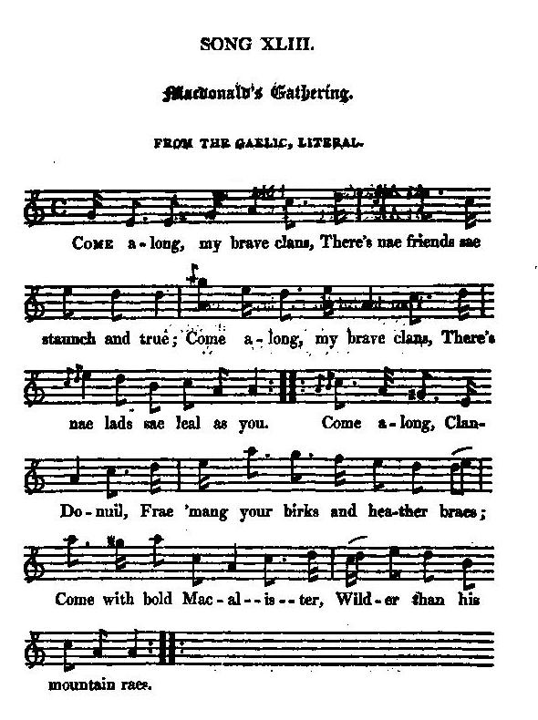
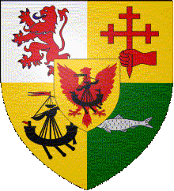

McDonald's Gathering
Rassemblement des clans McDonald
A gathering song
Tune - Mélodie"McDonald's Gathering"
from Hogg's "Jacobite Relics" 2nd Series N°43, page 84
Sequenced by Christian Souchon

|
To the tune:
"Is a genuine Highland song, translated and sent to me by a lady in Edinburgh, herself a Macdonnell, or at least was one once. I wish she had added an explanation, as it would have saved me a good deal of trouble and guessing; but all she has thought proper to add is, that every one of the chieftains and houses mentioned are Macdonnells." Source: James Hogg in "Jacobite Relics, vol II". |
 |
A propos de la mélodie:
Voici un véritable chant des Highlands, traduit et communiqué par une dame d'Edimbourg, une McDonald ou du moins une ancienne McDonald. J'aurais aimé qu'elle me fournisse quelques explications qui m'auraient évité bien des tracas et des interrogations, mais tout ce qu'elle a jugé bon d'ajouter est que tous les chefs et toutes les demeures cités appartiennent au clan Donald." Source: James Hogg in "Jacobite Relics, vol II". |

|
From the Gaelic, literal (*) 1. Come along, my brave clans, There's nae friends sae staunch and true; Come along, my brave clans, There's nae lad sae leal as you. (twice) Come along, Clan Domnuil, Frae 'mang your birks and heather braes; Come with bold McAlister, [1] Wilder than his mountain raes. (twice) 2. Gather, gather, gather, From Loch Morer to Argyle; Come from Castle Tuirim, Come from Moidart and the Isles. McAllan is the hero That will lead you to the field. Gather, bold Siolallain, Sons of them that never yield. [2] 3. Gather, gather, gather, Gather from Lochaber glens : Mac-Hic-Rannail calls you; [3] Come from Taroph, Roy, and Spean. Gather, brave Clan-Domnuil, Many sons of might you know ; Lenachan's your brother, Aucterechtan and Glencoe. [4] 4. Gather, gather, gather, "Tis your prince that needs your arm : Though McConnel leaves you, Dread no danger or alarm. Come from field and foray, Come from sickle and from plough, Come from cairn and correi, From deer-wake and driving too. 5. Gather, bold Clan-Domnuil ; Come with haversack and cord ; Come not late with meal or cake, But come with durk, aud gun, and sword. Down into the Lowlands, Plenty bides by dale and burn. Gather, brave Clan-Domnuil, Riches wait on your return. [5] Source: "The Jacobite Relics of Scotland, being the Songs, Airs and Legends of the Adherents to the House of Stuart" collected by James Hogg, 2ns series published in Edinburgh by William Blackwood in 1821. |
Traduction littérale du gaélique (*) 1. Est-il plus fidèles Amis qu'au sein de nos clans? Venez tous avec zèle Prendre part au rassemblement! (bis) Approche Clan Domnuil Quitte tes bruyères, tes sapins Avec McAlister, [1] Bien plus farouche que ses daims. (bis) 2. Que l'on se rassemble Du Loch Morar à l'Argyll! Venez de Castle Tuirim Venez de Moidard et des Îles McAllan ce héros Va vous conduire au champ d'honneur Venez, fier Siolallain Dont le clan ignore la peur. [2] 3. Que l'on se rassemble, Gens des glens de Lochaber! Mac Mhic Ronuil appelle: [3] Venez de Taroph, Roy et Spean! Venez, fier Clan-Domnuil, Tant de fils valeureux dans ce clan: Lenochan votre frère, Glencoe ainsi qu'Achtriachtan. [4] 4. Que l'on se rassemble! Votre prince vous attend: Si McConnell vous quitte N'ayez pas peur pour autant! Quittez champs et rapines Laissez la faucille et le soc! Quittez cairns et ravines Brisées de cerfs, larges troupeaux! 5. Viens donc, fier Clan Domnuil, Prends donc corde et havresac. Ni gâteau ni farine, Mais dirk, pistolet, estoc! C'est dans les Basses Terres Dans les vallées, au bord des torrents, Que s'assemblent tes frères, La richesse au retour t'attend. [5] (Trad. Christian Souchon (c) 2010) |
|
The following notes are from James Hogg:
[1] "I take it for granted then, that Glengarry is the first in the list here of the Clan Dhonuil, Macalister being very generally a patronymic of the chief of that house. [2] The next, without all doubt, is Clan-Ranald ; as the places mentioned are all on his ancient bounds ; for the chief of Sky having proved a truant at this bout, he is not thought worthy of mentioning save as such. [3] The third with the cramp name that nobody can read, and nobody can spell, must mean Keppoch ; as the glens mentioned are all in the upper parts of Lochaber. There is no circumstance in the fates of the Highlanders, occasioned to them by the rebellion, for which I lament so much, as the extinction of this brave and loyal chief and his clan, whose names are now a blank in the lands of their fathers. Keppoch could once have raised 500 men at a few days warning, and never was slack when his arm was needed, although his hand was something like Ishmael's of old, for he was generally at loggerheads with his neighbours, especially the Clan-Chattan, whom he once beat, with their chief, the laird of Macintosh, at their head, cutting a great part of their superior army to pieces, and forcing the laird, whom he took prisoner, to renounce his claim to extensive possessions, which Keppoch originally held of him. Keppoch was indeed too brave, and too independent; and it proved his family's ruin. When admonished once of the necessity of getting regular charter rights to his lands from government, of which he never had any, " No," said Keppoch, " I shall never hold lands that I cannot hold otherwise than by a sheep's hide." Keppoch trusted still to his claymore; but the day of it was past; " Othello's occupation was gone !" On the restoration of the forfeited estates, Keppoch, having no rights to show for his extensive lands, lost them ; a circumstance which must ever be deplored, but cannot now be remedied. [4] Lenochan, Aucterechtan, and Glencoe , are here claimed to be of the same family with Keppoch ; yet Lenochan's name, it would appear, was not Macdonald." [5] Additional note to note 3: Clan McDonald of Keppoch is continued by ClanRanald of Lochaber . By decision of the Lyon Court dated 30th January 2004, Ranald Alasdair McDonald of Keppoch was acknowledged as Chief of the Clan. The background is the McDonald of the Isles Tartan as published in the "Vestiarium Scoticum" in 1842. |
Les notes qui suivent sont de Hogg:
[1] "Je tiens pour acquis que: Glengarry est le premier des Clans Donald, McAlister (fils d'Alexandre) étant de façon générale le nom patronymique du chef de cette branche. [2] Le suivant est sans aucun doute ClanRanald , car les noms de lieux cités sont tous sur ses anciennes terres. Comme le chef de l'Île de Skye faisait "l'école buissonnière" à cette époque, le barde n'a pas jugé bon de le citer explicitement. [3] Le troisième avec un nom à rallonge que personne ne sait lire ni prononcer, doit être Keppoch , car les glens cités sont tous situés dans la partie nord de Lochaber. Il n'est aucune des conséquences tragiques pour les Highlanders de leur rébellion que je regrette autant que la mort de ce chef brave et loyal et l'extinction de son clan, qui laissent de grands vides dans le pays de leurs aïeux. Keppoch pouvait autrefois mobiliser 500 hommes en quelques jours et ne traînait pas les pieds quand on avait besoin de lui, même si sa main était comme celle d'Ismaël dans la Bible, car il était généralement à couteaux tirés avec ses voisins, en particulier le Clan Chattan. Il les battit un jour à plate couture alors qu'ils avaient l'avantage du nombre et obligea leur Chef, laird McKintosh qu'il avait fait prisonnier, à renoncer à récupérer de vastes terres qu'il tenait de lui. Un jour on le prévint de la nécessité d'obtenir un titre de propriété en bonne et due forme pour ses terres pour lesquelles il n'en existait pas. "Non" dit Keppoch, "je ne possèderai jamais de terres qu'on ne peut avoir qu'au prix d'un parchemin." Il faisait plus confiance à son claymore qu'à un écrit. Mais ce temps était révolu: "Le métier d'Othello avait vécu!" Lors de la restitution des terres sous séquestre, Keppoch qui ne détenait aucun titre pour ses immenses propriétés les perdit toutes. C'est un fait regrettable mais irrémédiable. [4] Lenochan, Auchterechtan et Glencoe sont censés appartenir ici à la même branche que Keppoch, bien que l'on pourrait montrer que le nom de Lenochan est étranger aux McDonald." [5] Note complémentaire à la note 3: Le clan McDonald de Keppoch a un successeur: ClanRanald de Lochaber . Une décision du roi d'armes, Lord Lyon, en date du 30 janvier 2004, a reconnu à Ranald Alasdair McDonald de Keppoch la qualité de Chef du clan. Le "papier peint" est le tartan "McDonald des Îles" tiré du recueil "Vestiarium Scoticum" de 1842. |
|
|
|
| Click to know more about CLAN DONALD |